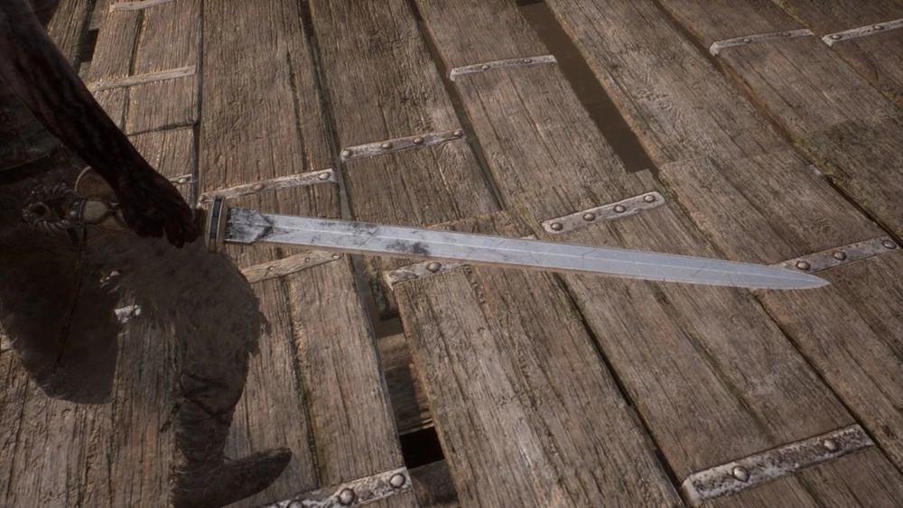
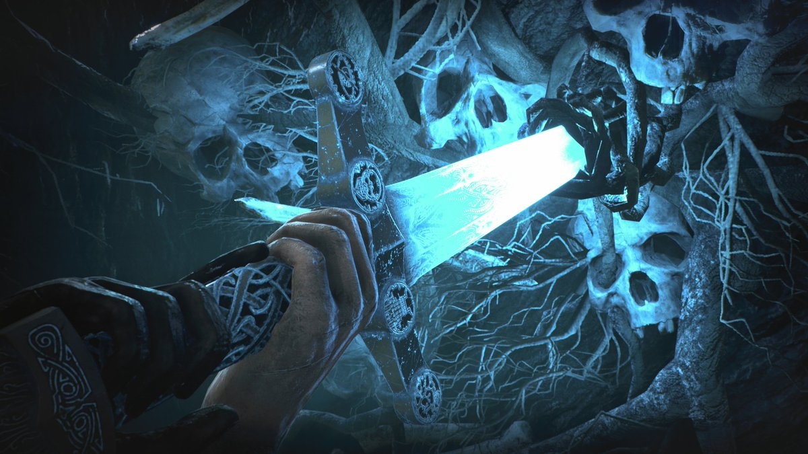
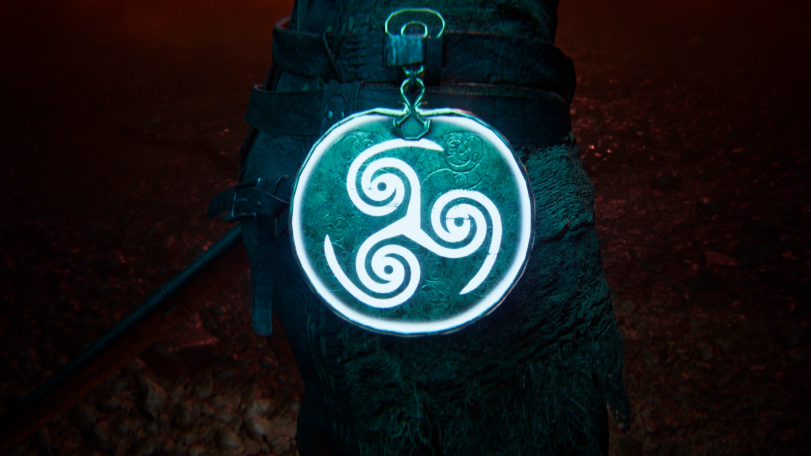

Recursos
Espada de Senua
Como e quando Senua adquiriu a espada é desconhecido, mas é possível que ela a possua antes mesmo de ter conhecido Dillion. Ela a possui há tempo suficiente para manejá-la bem. É a única arma que ela usa em combate contra os inimigos antes de obter Gramr. Senua usa a espada para matar Valravn e Surtr para abrir caminho para o Portão para Helheim. Quando ela chega perto do Santuário de Hela, ela brande a espada quando Hela se aproxima dela. No entanto, Hela rapidamente derruba Senua e a joga na praia, quebrando a espada também. Senua usa a lâmina quebrada da espada para cauterizar um grande corte em seu rosto enquato a Sombra a insultava, e então a descarta. Até que ela adquira Gramr , Senua fica sem arma.

Espada Gramr
Gramr é a lendária espada forjada por Odin e presenteada a Sigmund , mais tarde usada por Sigurd para matar o dragão Fafnir . É a espada que Senua tem a tarefa de reforjar (completando as Provações de Odin) para que ela possa usá-la para derrotar Hela.

Espelho de Ferro e Habilidade Foco
O Espelho de Ferro é um item presenteado de Druth para Senua na época em que eles se conheceram nos bosques.Funcionando como um foco para a mente de Senua durante situações extremas. Senua pode usá-lo para manipular o tempo ao seu redor em uma área de distâcia limitada, sendo extramamente essencial para o combate contra os seus inimigos. Foco é o nome da habilidade de Senua de centralizar sua atenção em certas coisas do ambiente. Embora ela use o foco principalmente para examinar coisas específicas ao longo de sua jornada, como Pedras da Sabedorias e runas.
